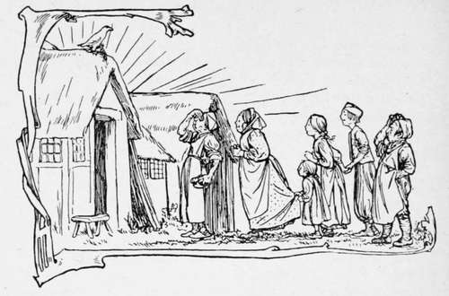

The Juniper Tree
Description
This section is from the book "Household Tales by Brothers Grimm", by Brothers Grimm. Also available from Amazon: Household Tales by Brothers Grimm.
The Juniper Tree
Long, long ago, some two thousand years or so, there lived a rich man with a good and beautiful wife. They loved each other dearly, but sorrowed much that they had no children. So greatly did they desire to have one, that the wife prayed for it day and night, but still they remained childless.
In front of the house there was a court, in which grew a juniper tree. One winter's day the wife stood under the tree to peel some apples, and as she was peeling them, she cut her finger, and the blood fell on the snow. "Ah," sighed the woman heavily, " if I had but a child, as red as blood and as white as snow," and as she spoke the words, her heart grew light within her, and it seemed to her that her wish was granted, and she returned to the house feeling glad and comforted. A month passed, and the snow had all disappeared; then another month went by, and all the earth was green. So the months followed one another, and first the trees budded in the woods, and soon the green branches grew thickly intertwined, and then the blossoms began to fall. Once again the wife stood under the juniper tree, and it was so full of sweet scent that her heart leaped for joy, and she was so overcome with her happiness, that she fell on her knees. Presently the fruit became round and firm, and she was glad and at peace; but when they were fully ripe she picked the berries and ate eagerly of them, and then she grew sad and ill. A little while later she called her husband, and said to him, weeping, "If I die, bury me under the juniper tree." Then she felt comforted and happy again, and before another month had passed she had a little child, and when she saw that it was as white as snow and as red as blood, her joy was so great that she died.
Her husband buried her under the juniper tree, and wept bitterly for her. By degrees, however, his sorrow grew less, and although at times he still grieved over his loss, he was able to go about as usual, and later on he married again.
He now had a little daughter born to him; the child of his first wife was a boy, who was as red as blood and as white as snow. The mother loved her daughter very much, and when she looked at her and then looked at the boy, it pierced her heart to think that he would always stand in the way of her own child, and she was continually thinking how she could get the whole of the property for her. This evil thought took possession of her more and more, and made her behave very unkindly to the boy. She drove him from place to place with cufBngs and buffetings, so that the poor child went about in fear, and had no peace from the time he left school to the time he went back.
One day the little daughter came running to her mother in the store-room, and said, " Mother, give me an apple." "Yes, my child," said the wife, and she gave her a beautiful apple out of the chest; the chest had a very heavy lid and a large iron lock.
"Mother," said the little daughter again, "may not brother have one too?" The mother was angry at this, but she answered, "Yes, when he comes out of school."
Just then she looked out of the window and saw him coming, and it seemed as if an evil spirit entered into her, for she snatched the apple out of her little daughter's hand, and said, "You shall not have one before your brother." She threw the apple into the chest and shut it to. The little boy now came in, and the evil spirit in the wife made her say kindly to him, "My son, will you have an apple," but she gave him a wicked look. " Mother," said the boy, " how dreadful you look! yes, give me an apple." The thought came to her that she would kill him. "Come with me," she said, and she lifted up the lid of the chest, " take one out for yourself." And as he bent over to do so, the evil spirit urged her, and crash! down went the lid, and off went the little boy's head. Then she was overwhelmed with fear at the thought of what she had done. " If only I can prevent anyone knowing that I did it," she thought. So she went upstairs to her room, and took a white handkerchief out of her top drawer; then she set the boy's head again on his shoulders, and bound it with the handkerchief so that nothing could be seen, and placed him on a chair by the door with an apple in his hand.
Soon after this, little Marleen came up to her mother who was stirring a pot of boiling water over the fire, and said, " Mother," brother is sitting by the door with an apple in his hand, and he looks so pale; and when I asked him to give me the apple, he did not answer, and that frightened me."
" Go to him again," said her mother, " and if he does not answer, give him a box on the ear." So little Marleen went, and said, " Brother, give me that apple," but he did not say a word; then she gave him a box on the ear, and his head rolled off. She was so terrified at this, that she ran crying and screaming to her mother. " Oh! " she said, " I have knocked off brother's head," and then she wept and wept, and nothing would stop her.
" What have you done ! " said her mother, " but no one must know about it, so you must keep silence; what is done can't be undone; we will make him into puddings." And she took the little boy and cut him up, made him into puddings, and put him in the pot. But Marleen stood looking on, and wept and wept, and her tears fell into the pot, so that there was no need of salt.
Presently the father came home and sat down to his dinner; he asked, "Where is my son?" The mother said nothing, but gave him a large dish of black pudding, and Marleen still wept without ceasing.
The father again asked, "Where is my son?"
" Oh," answered the wife, " he is gone into the country to his mother's great uncle; he is going to stay there some time."
" What has he gone there for ? and he never even said good-bye to me ! "
"Well, he likes being there, and he told me he should be away quite six weeks; he is well looked after there."
Continue to:
- prev: Thumbling The Dwarf And Thumbling The Giant. Continued
- Table of Contents
- next: The Juniper Tree. Continued
Tags
fairy tales, children's stories, brothers grimm, household tales